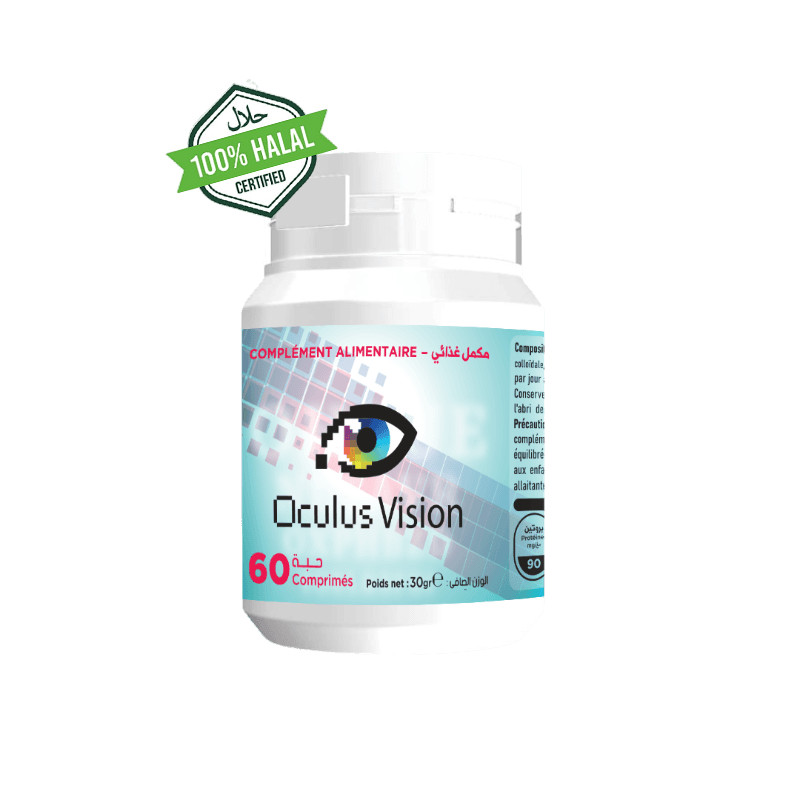
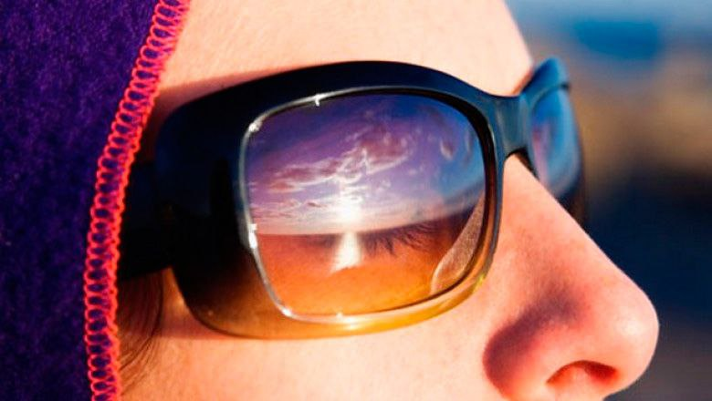

مقابلة مع الدكتور اوليغ و تفاصيل التحدث عن مشاكل العيون
تفاصيل الحديث بين المراسلة مارينا و الدكتور اوليغ
طلبنا من دكتور أوليغ و هو دكتور في العلوم الطبية أن يخبرنا بالمزيد عن مشاكل العيون و كيفية التخلص من هذه المشاكل بشكل دائم و التخلص منها بأسهل الطرق .
 دكتور أوفاتوف أوليغ فاليريفيتش ممارس عام ، دكتور من أعلى فئة ، دكتور في العلوم الطبية
دكتور أوفاتوف أوليغ فاليريفيتش ممارس عام ، دكتور من أعلى فئة ، دكتور في العلوم الطبية
المراسلة مارينا : "كيف تحدث مشاكل العيون وما هي علاماتها وأعراضها وأسبابها؟"
دكتور اوليغ : مع تقدمنا في العمر ، نصبح أكثر عرضة لمشاكل العيون مثل : إعتام عدسة العين ، وتنكس الشبكية ، والزرق. في هذا الصدد ، يعد الحفاظ على الرؤية جانبًا مهمًا من نمط الحياة الصحي. و بالفعل التغذية السليمة يمكن أن تساعد في تحسين صحة العين ومنع تطور مشاكل العين.
المراسلة مارينا : "أخبرنا من فضلك دكتور اوليغ . ما هي أبرز مشاكل العيون؟"
أبرز مشاكل العيون هي إجهاد العين و هو السبب الرئيسي المتسبب للكثير من المشاكل بالعين .
إجهاد العين هو مشكلة شائعة تحدث عند تعرض العينين للإرهاق نتيجة الاستخدام المفرط، مثل القيادة لمسافات طويلة أو التحديق في شاشات الكمبيوتر والأجهزة الرقمية الأخرى.
المراسلة مارينا : "أخبرنا من فضلك دكتور اوليغ . ما هي اعراض إجهاد العين؟"
الدكتور اوليغ :
تشمل أعراض إجهاد العين ما يلي :
-
التهاب العين أو الشعور بألم أو حُرقة أو حكة بها
-
العين الدامعة أو الجافة
-
ضبابية الرؤية أو ازدواجها
-
الصداع
-
زيادة الحساسية للضوء، التي تُسمى رهاب الضوء
-
صعوبة التركيز
-
الشعور بعدم القدرة على إبقاء العينين مفتوحتين
المراسلة مارينا : "أخبرنا من فضلك دكتور اوليغ .ما هي أسباب الأسباب الشائعة التي تؤدي إلى إجهاد العين؟"
الدكتور اوليغ :
سأذكر لكم بعض الآسباب الشائعة :
-
النظر إلى شاشات الأجهزة الرقمية
-
القراءة بلا توقّف مؤقت لإراحة العين
-
القيادة لمسافاتٍ طويلة أو مُمارسة الأنشِطة الأخرى التي تتطلب التركيز لوقت طويل
-
التعرُّض للضوء الساطع أو التوهُّج
-
إجهاد العين عند محاولة الرؤية في الإضاءة الخافِتة للغاية
-
وجود مشكلة أساسية بالعين، مثل جفاف العين أو إبصار لم يُصحَّح، ويُعرف باسم الخطأ الانكِساري
-
التعرض للضغط أو الإرهاق
-
التعرُّض للهواء الجافِّ المتحرك من مروحة أو نظام تدفئة أو جهاز تكييف
دكتور اوليغ
استخدام الكمبيوتر والأجهزة الرقمية بكثرة هو سبب من الأسباب الرئيسية لظهور مشاكل العيون .
استخدام أجهزة الكمبيوتر وغيرها من الأجهزة الرقمية الأخرى لمدد طويلة أحد الأسباب الأكثر شيوعًا التي تُسبب إجهاد العين.
وتَزيد خطورة الإصابة بمشاكل العيون لدى من ينظرون إلى الشاشات لمدة ساعتين أو أكثر على التوالي كل يوم.
المراسلة مارينا : "أخبرنا من فضلك دكتور اوليغ .ما الذي يمكن للنظر للأجهزة الرقمية كالتليفون و الكمبيوتر و التلفاز ان يضر نظرنا ؟"
الدكتور اوليغ :
تُسبب أجهزة الكمبيوتر إجهاد العين أكثر من قراءة المواد المطبوعة، وذلك لأن مستخدميها يفعلون عادةً ما يلي:
-
الرمش بعدد مرات أقل أثناء استخدام أجهزة الكمبيوتر، والرَّمش مهم للغاية لترطيب العينين
-
يَنظرون إلى الشاشات الرقمية من مسافات أو زوايا أقرب من المسافات والزوايا المثالية
-
يَستخدمون الأجهزة ذات الشاشات المتوهجة أو العاكسة
-
يَستخدمون أجهزة بتباين ضعيف بين النص والخلفية
-
في بعض الحالات، يُمكن أن تُسبب إحدى المشكلات الأساسية في العين، كعدم توازن عضلات العين أو الرؤية غير المصححة، حدوث متلازمة مشاهدة الكمبيوتر أو تؤدي إلى تفاقُمها.
ومن العوامل الأخرى التي قد تُسبب تفاقُم الحالة:
-
وهَج الشاشة
-
وضعية الجسم غير السليمة
-
إعداد مكان العمل على الكمبيوتر وتكوينه
-
دوران الهواء، مثل الهواء الصادر من جهاز تكييف الهواء أو من مروحة قريبة
المراسلة مارينا : "أخبرنا من فضلك دكتور اوليغ .ما الذي علينا فعله إذا كان شخص ما مصاب بهذه الإعراض و لديه مشاكل بالعيون ؟"
الدكتور اوليغ :
هذا ليس بالأمر الصعب ، لكنه يتطلب الصبر و الإلتزام . لكن الأمر يستحق ذلك وسيؤتي ثماره بعد عدة مرات
فقط منتج واحد أنصح به جميع الأشخاص اللذين يعانون من هذه المشاكل بالعيون و هو مكمل غذائي يسمى OculusVision فهو منتج طبيعي 100% و ليس له اثار جانبية على الصحة و بفضل مكوناته الطبيعية تأثيره قوي جداً حتى في الحالات الصعبة . .

هذا هو شكل عبوة OculusVision
المراسلة مارينا : "أخبرنا من فضلك دكتور اوليغ .ما هو OculusVision ؟"
الدكتور اوليغ :
OculusVision هو مكمل غذائي في شكل حبوب . و تم صنعه للمساعدة في مكافحة إجهاد العين والحفاظ على الرؤية الطبيعية من خلال عمل اللوتين والمكونات الأخرى ودعم صحة العين وتحسين حدة البصر بمضادات الأكسدة والمغذيات الوقائية مثل اللوتين.بالإضافة إلى ذلك ، يساعد OculusVision في مكافحة إجهاد العين وإبطاء تطور التنكس البقعي المرتبط بالعمر.

المراسلة مارينا : "أخبرنا من فضلك دكتور اوليغ . ماذا يحدث إذا تجاهل احد ما هذه الأعراض و المشاكل بالعيون ؟"
الدكتور اوليغ :
تجاهل مشاكل العيون يمكن أن يؤدي إلى مخاطر صحية خطيرة. وفيما يلي بعض المخاطر الشائعة لتجاهل مشاكل العيون:
-
فقدان البصر: إذا لم يتم التخلص من المشاكل المرتبطة بالعين بشكل صحيح ، فإنه يمكن أن يؤدي إلى فقدان البصر أو تدهور الحالة .
-
المشاكل الأخرى للصحة: يمكن أن تكون المشاكل في العين دليلاً على مشاكل صحية أخرى في الجسم، مثل السكري أو ارتفاع ضغط الدم أو مشاكل القلب.
-
التعرض للإصابة: قد يزيد تجاهل مشاكل العين من خطر الإصابة بمشاكل اكبر في العين، مثل تشوه الشبكية أو الكسور العظمية أو الالتهابات.
لذا يجب علينا التخلص من مشاكل العيون في أسرع وقت و التخلص منها بشكل دائم و ليس فقط بشكل مؤقت كما يفعل الكثير من الأشخاص .
المراسلة مارينا : "من هم أكثر أشخاص بحاجة إلى إستخدام OculusVision ؟"
الدكتور اوليغ :
يُنصح بهذا المنتج لمساعدة أي شخص يعاني من إجهاد في العين خصوصاً لهؤلاء الأشخاص :
-
الأشخاص اللذين يقضون الكثير من الوقت أمام الشاشة (كمبيوتر ، ألعاب فيديو ، تليفون ، تلفزيون)

-
السائقين الليليين

-
الأشخاص ذوي العيون الفاتحة اللون

-
الأشخاص الحساسين للأشعة فوق البنفسجية

-
الأشخاص العاملين بالمصانع و المتعرضين بشكل دائم للتلوث
-
من المهم بشكل خاص استخدام OculusVision للأشخاص الذين تزيد أعمارهم عن 55 عامًا والذين يعانون من مشاكل في الرؤية وعدم الراحة
المراسلة مارينا : "ما هي مكونات OculusVision ؟"
الدكتور اوليغ :
من مميزات هذا المنتج الأساسية انه منتج طبيعية 100% و لذلك هو ليس له أعراض جانبية .و سوف أقول لكم بعض من مكوناته :
مستخلص اللوتين
مستخلص اللوتين يمكن أن يساعد في تحسين صحة العين، حيث يقوم بحماية العين من الأضرار التي يمكن أن تسببها الأشعة فوق البنفسجية والتي يمكن أن تؤدي إلى مشاكل مثل المياه البيضاء والماكولار ديجنيريشن.
يتميز مستخلص اللوتين بأنه آمن وفعال، حيث لا توجد له آثار جانبية .
السيليكا الغروية
السيليكا الغروية هي عنصر معدني مهم لصحة الجسم، حيث تشكل جزءًا من العديد من الأنسجة في الجسم مثل العظام والأنسجة الضامة والغضاريف. كما أنها تعتبر مضاداً للأكسدة الطبيعي وتساعد في تقوية الجهاز المناعي والحفاظ على صحة الجلد والشعر والأظافر.
ستيرات المغنيسيوم
إن المغنيسيوم يعتبر مهمًا للصحة العامة و يكون مفيدًا للعين في بعض الحالات
أن استهلاك الأطعمة الغنية بالمغنيسيوم يمكن أن يساعد في تحسين صحة العين، حيث يمكن الحصول على المغنيسيوم من الخضروات الورقية الخضراء والمكسرات والحبوب والبقوليات والأسماك واللحوم او عن طريق تناوله في شكل مكمل غذائي كما هو الحال في OculusVision.
المراسلة مارينا : "ما هي مميزات OculusVision ؟"
الدكتور اوليغ :
-
تخفيف العيون المتعبة والجافة .
-
يخفف من الوخز واحمرار العين والالتهابات.
-
المساعدة على الرؤية الباهتة.
-
المساعدة على حدة العين.
-
يساعد في مكافحة إجهاد العين.
-
الحفاظ على الرؤية الطبيعية من خلال عمل اللوتين والمكونات الأخرى.
-
دعم صحة العين.
-
بالإضافة إلى ذلك ، يساعد OculusVision في مكافحة إجهاد العين وإبطاء تطور التنكس البقعي المرتبط بالعمر.
المراسلة مارينا : " كيف نستخدم OculusVision ؟"
الدكتور اوليغ :
أنصح الجميع بتناول حبة واحدة يومياً مع كوب كبير من الماء مع وجبات الطعام .
المراسلة مارينا : " دكتور اوليغ و هل يمكن للمواطنين الجزائريين الحصول على هذا المنتج؟"
الدكتور اوليغ :
بالطبع يمكنهم الحصول على هذا المنتج الرائع عن طريق الإنترنت و من مميزات الشركة المصنعة لهذا المنتج انه ليس على احد الدفع قبل إستلام المنتج .
كل ما عليكم هو ان تفعلوا هذه الخطوات :
-
ملئ النموذج الرسمي للطلب في الأسفل ببياناتك إسمك و رقم هاتفك
-
بعد ذلك سوف يتم التواصل معك مختص من قبل الشركة المصنعة لتأكيد عنوان الوصول
-
بعد ذلك في خلال مدة قصيرة سوف يتم توصيل المنتج لك عن طريق عامل التوصيل . و الدفع فقط عند إستلام المنتج .
المراسلة مارينا : " و ما هو سعر OculusVision في الجزائر ؟"
الدكتور اوليغ :
لحسن الحظ الأن يجري تخفيض من الشركة المصنعة للمنتج و هذا التخفيض بنسبة
50%
أنصح الجميع باللحاق به .

هذا التخفيض متاح حتي تاريخ :
ضمناً. و هذا يعني ان أخر يوم بالتخفيض هو اليوم .